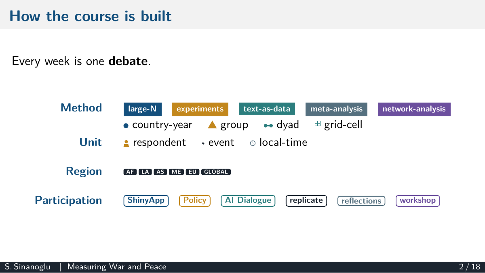

Courses taught and designed

The Political Economy of Economic Crisis
The political and social costs of economic crises and austerity: electoral punishment, redistribution preferences, and the international ramifications, from autocratization to the global monetary order.
Syllabus (PDF) →Student evaluations
Extremely satisfied with my experience, instructor offered an excellent space for discussion, making everyone feel comfortable, despite getting into some controversial issues related to the political implications of economic crises.
The professor created an environment in which I felt incredibly comfortable. I honestly believed in the sentiment "no stupid questions." I never felt embarrassed when I failed to understand a concept. Prof always was very quick to respond to emails and was very understanding of the often harsh reality of student life.
Professor Semuhi was excellent in his instruction. His course content was thorough and engaging. He was extremely knowledgable and did an amazing job in passing on his knowledge. His assignments and readings were well curated and the atmosphere in his class was very conducive to learning. Discussions were well orchestrated and made sure no one felt left out or disengaged. He was also very warm and understanding and never added unnecessary burden to discourage the learning experience.
The International Politics of Authoritarianism
The international roots of autocratic resilience: post-liberal order, cross-border repression, autocracy promotion and diffusion, and whether the international community can constrain autocratic regimes.
Syllabus (PDF) →Student evaluations
Hands down, best learning experience I've had at UTM. The professor is extremely engaging and provides great support to the whole class. The general mood of the class was excellent throughout, and this is thanks to the professor's excellent student management and treating us like peers.
The overall instruction of this course was great. Professor Sinanoglu was very enthusiastic about the subject material, explained concepts very clearly, and created an environment where I could feel comfortable sharing thoughts about the course readings.
I appreciated Professor Sinanoglu's conversational teaching style. It essentially forced us, as students, to engage with the readings rather than merely recite back what we read. The critical engagement made me think more about the implications of the readings rather than what was printed.
Politics in the Middle East
Colonial state legacies, patrimonial capitalism and the rentier state, authoritarian ruling bargains, and social mobilization, read through the region's intra-regional variation.
Syllabus (PDF) →Student evaluations
The professor created an optimal learning environment that stimulates critical thinking and discussion. Engagement with the students was optimal, and the learning experience was professional and inclusive. The professor made sure all students were engaged with the content and made effective accommodations to ensure optimal learning.
The instructor offered assistance of all kinds, from office hours at the students' preferred times, generous extensions when work in the semester was piling up, and feedback on every assignment that helped to improve for future assignments.
One of the best professors, very well versed in Middle Eastern politics. The professor was brilliant and enthusiastic.

Measuring War and Peace: Quantitative Methods in Conflict Studies
I designed an MA-level seminar on debates over how conflicts are measured, why they start, who funds rebels, who gets victimized, how rebels communicate, and what makes peace hold, with each topic pairing quantitative readings with interactive apps, replication snippets, policy exercises, and an OSINT workshop.
Course deck (PDF) →